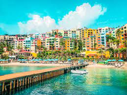
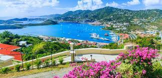

Bavaro Beach
Bavaro Beach is the pain beach in Punta Cana. TStretch 30 miles across the coast of Punta Cana, Bavaro beach holds many excitings things like beach bars, resorts, restaurants, and activities to do along the way. This is a public beach allowing anyone in Punta Cana to come and enjoy the beautiful weather and ocean!
Alto De Chavon
Alto De Chavon is a 16th century Mediterranean  villages that was built of entirely stone. The village was built over six years and lays 300 feet above the Chavon River. The villages opening started with Frank Sinatra performing at their 5,000 seat outdoor amphitheater! Alto De Chavon now sits as a great tourist attraction with many cigar, clothing and jewerly shops, restaurants, bars, and many other activities!
villages that was built of entirely stone. The village was built over six years and lays 300 feet above the Chavon River. The villages opening started with Frank Sinatra performing at their 5,000 seat outdoor amphitheater! Alto De Chavon now sits as a great tourist attraction with many cigar, clothing and jewerly shops, restaurants, bars, and many other activities!
Columbus Park
One of the most active parks in the Domincan republic faces the oldest cathedral in the Americas. At the center of this beautiful park sits a large statue of Christopher Columbus which points to the island he discovered. Columbus park is a magnet for tourists as there are many musicians playing music and sidewalk cafes along the way.